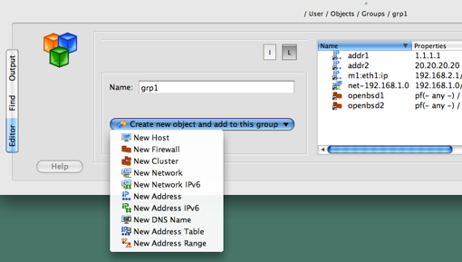
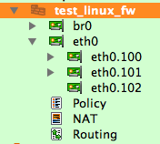
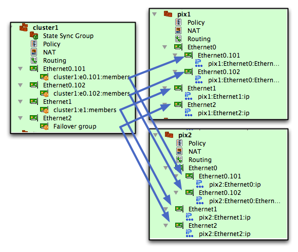
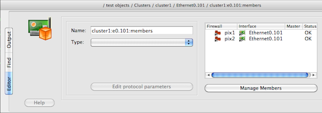
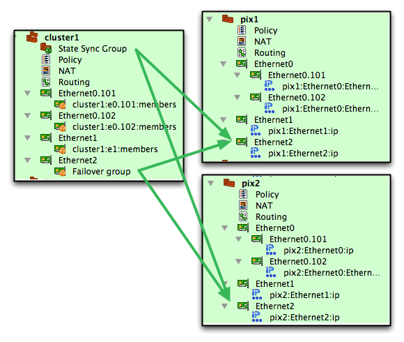
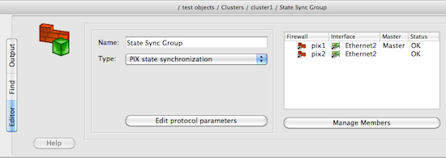
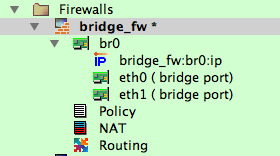

The editor panel and object tree are now detachable. You can "float" these windows and rearrange them on the screen any way you want. There is only one editor panel even when you open several data files at the dame time. Each data file is opened in its own project window with object tree and rules.
Selection of the object in the tree or rules does not automatically open it in the editor anymore. Use double click or context menu item "Edit" to open object in the editor. This helps, for example, when you need to populate large object group and need to switch between libraries to find objects. Switching to another library or accidentally clicking on a wrong object in the tree does not cause editor to switch.
Full implementation of the "undo" facility for all operations in the GUI. You can also monitor undo stack in the "Undo stack window" that you can open using main menu item "View/Undo Stack".
Behavior of all object dialogs has changed. According to the results of the user community opinion poll and discussion, object dialogs are losing button "Apply". All changes made in dialog entry fields are saved into the object immediately. This does not change the data in the .fwb file, only objects in memory. Combined with Undo, this allows for faster object editing and roll back of changes.
"Single rule compile": After you select a rule in policy or NAT rule set, you can compile it and see the result in the editor panel immediately if you hit "X" on the keyboard or use context menu that appears if you click right mouse button. The result is shown in the editor panel immediately. To select a rule click anywhere in it (any rule element, not just rule number).
Error and warning messages generated by the policy compilers are highlighted using red and blue colors in the compiler output panel when you compile single rule. When you compile all rules of the firewall using toolbar buttons or main menu items "Compile" or "Install", errors and warnings are also highlighted in the dialog. Clicking on the error or warning message opens corresponding firewall and selects the rule that caused it.
A new "Filter" input field is located above the object tree. Typing fragment of the name in this field automatically limits set of objects shown in the tree to those that match what was typed. The filter maintain history of strings entered in it for the duration of the session.
Right above the panel showing rules there are now two new buttons. These allow you to compile and install policy for the firewall object shown in the rules panel at the moment. The same functions are available via context menu associated with the firewall or cluster object in the object tree, but these buttons are easier to use.
The GUI can show brief summary of object attributes in the second column in the object tree. This is controlled by a checkbox in the global preferences dialog, tab "Objects". This is off by default. The first column always shows object icon and its name, the second (optional) column shows its attributes. Interface label is shown in the second column. The width of both columns in the tree is set automatically to accommodate all the text, then can be adjusted by the user using mouse. Column width is saved in settings and will be restored upon program restart. Column width is saved per-file, per-library.
Now you can change IP addresses of interfaces of the new firewall created from a template. Templates come preconfigured with some IP addresses which probably do not match addresses used on your networks. When you create new firewall object from a template, the "new firewall" wizard includes interface editor page where you can change addresses and interface types (static or dynamic). The program not only changes addresses of interfaces, it also scans policy and NAT rules of the template looking for network objects that match original template addresses and replaces them with network objects that match new ones.
"Add object to a groups directly from the group dialog". Group object dialog now has a button that shows a menu when clicked, this menu allows you to create new object and add it to the group in one operation.
Password caching: Built-in installer can remember firewall password (and enable password for Cisco) for the duration of the session. Passwords are never stored permanently in any form, encrypted or plain text, they are only kept in memory of working Firewall Builder GUI instance. You need to enter password once when you activate generated policy. If you keep the program open and need to modify and activate policy again, the password fields in the installer dialog can be filled automatically. The feature is optional and is off by default. Cached passwords are associated with the firewall object and account name used to activate policy. To use this feature, turn it on in Preferences and configure user name used to authenticate to the firewall in the "advanced" settings dialog of the firewall object. Warning: using this feature creates certain risk if working Firewall Builder GUI is left unattended on the unlocked workstation. Someone may walk up to the machine and make changes to the firewall using cached password of the administrator who used the same GUI session before. Always lock the screen or exit Firewall Builder GUI when leaving computer.
The program supports new types of interfaces: VLAN, bridge, bonding. This is fully implemented for Linux and partially for other platforms. VLANs are added as child objects of an interface, like so:
The GUI checks the name of the vlan subinterface against naming convention for vlan interfaces on the chosen OS. For example, both "eth0.100" and "vlan100" are supported on Linux, while on Cisco IOS or PIX it should be "FastEthernet0/1.101"
See below for more details on the bridge interfaces implementation.
The program can generate commands to configure vlans, bridges and bonding interfaces on Linux. This is off by default and controlled by checkboxes in the "script" tab of the firewall object dialog. Generated script adds and removes vlans, bridges, bridge ports, bond and bond slaves incrementally. That is, the script analyzes existing vlan interfaces and compares them with vlan interfaces defined in the Firewall Builder GUI and then adds new ones and removes those that do not exist in fwbuilder. The same algorithm is used to create bridges, add or remove bridge ports and create bonds and then add or remove slave interfaces.
Configlets: generated firewall script (for all platforms) is assembled from small fragments we call "configlets". These fragments are located in the "/usr/share/fwbuilder/configlets" (on Linux). Each configlet is a template that uses specially defined macros which the program replaces with actual strings and values when it generates firewall configuration. There are separate templates for different firewall platforms and for different parts of the configuration file to be created. Supported macros include simple variable expansion and conditional "If - then" construct. You can override configlets we provide with your own if you create directory "fwbuilder/configlets" in your home directory and place files with the same name there. You need to retain the structure of subdirectories inside this directory, that is, the directory should be "$HOME/fwbuilder/configlets/linux24" for the configlets installed in "linux24" subdirectory under "/usr/share/fwbuilder/configlets". This way, you can change virtually all aspects of generated configuration file.
Built-in policy installer gets commands that it needs to execute on the firewall from configlets. Two configlets are used for Unix-based firewalls (Linux, OpenWRT, DD-WRT, Sveasoft, IPCOP and its variants, OpenBSD, FreeBSD, MacOSX, Solaris): "installer_commands_reg_user" and "installer_commands_root". You can change the behavior of the installer without having to touch C++ code, just create a copy of the configlet file in $HOME/fwbuilder/configlets and modify it.
Terminology for policy rule actions that create branching in the rule set or tag packets has been unified. Now we call these actions "Branch" and "Tag" for all platforms. Before, the name was different and matched original action on each platform, that is for PF it was "Anchor" and "Tag" and for iptables "Chain" and "Mark" respectively.
"Find where used" function can now find all uses of the given object, as well as all uses of its children. For example, if the object is firewall, then this function can find all groups and rules that refer to it directly, or to it and all its interfaces and their addresses. This extension is optional, it is controlled by a checkbox in the "Find" dialog.
Added a place in the global Preferences dialog for options specific for different object types. First parameters include options for DNSName and AddressTable to let the user decide if the newly created objects of these types should be automatically configured with "Compile Time" or "Run Time" mode. Also, added an option that makes DNSName object editor copy the name of the object into the DNS record input field when new object is created or whenever the name changes. This is useful when the user does not want to keep object name and dns record different because they need to enter the name only once.
"Batch install" checkbox moved to the page that shows compiler progress so the user can decide to do batch install right before they perform installations instead of doing this before they start compile.
Standard objects library now comes with new IPv6 Network objects. These objects represent IPv6 networks that should not be routed on the Internet. Included: RFC3849 "Documentation Network" 2001:db8::; RFC4291 "Link local" fe80::/10; RFC4773 "Experimental Network" 2001:0000::/29 to 2001:01F8::/29. Also added a group "ipv6 private" that includes all these networks.
Added GUI elements to support IP option "router-alert" which is now available as an attribute of IPService object.
Standard objects library now comes with new IPv6 Network objects. These objects represent IPv6 networks that should not be routed on the Internet. Included: RFC3849 "Documentation Network" 2001:db8::; RFC4291 "Link local" fe80::/10; RFC4773 "Experimental Network" 2001:0000::/29 to 2001:01F8::/29. Also added a group "ipv6 private" that includes all these networks.
Added address objects for standard multicast groups: all-hosts, all-routers, all DVMRP, OSPF, RIP, EIGRP, DHCP server / relay agent, PIM, RSVP-ENCAPSULATION, VRRP, IGMP, OSPFIGP-TE, HSRP, mDNS, Link-local Multicast Name Resolution, Teredo.
All compilers issue a warning when the firewall has no top level NAT or Policy rule set. Top rule set is used to generate iptables rules in the built-in chains INPUT/OUTPUT/FORWARD or the rules in the main PF configuration file (not anchors). If the firewall object has other not-top Policy and NAT rule sets but no top rule set, packets will never reach any rules. However there are legitimate cases when administrator may want to use fwbuilder to only generate iptables commands for a custom chain or configuration for a custom PF anchor, in which case this is not an error. Compilers generate warning for this condition to bring it to the attention of administrator but continue processing the rules.
Test data file cluster.fwb with examples of different cluster configurations is available for download here.
New object type "Cluster" (located under Clusters in the tree) represents the HA pair. You configure policy and NAT rules in the rule sets of this object rather than in the actual firewalls.
Here is what you need to do to set up HA configuration:
Firewall Builder supports PIX "lan based" failover configuration. Unlike in Linux or BSD, where each interface of the firewall runs its own instance of failover protocol, PIX runs one instance of failover protocol over dedicated interface. PIX can also run state synchronization protocol over the same or another dedicated interface. These dedicated interfaces should be connected via separate switch and do not see regular traffic. Here is how this is implemented in Firewall Builder:

The Failover Group object "cluster1:e0.101:members" is configured with interfaces "Ethernet0.101" of both members:


The State Synchronization Group object "State Sync Group" is configured with interfaces "Ethernet2" of both members:

Built-in policy installer treats PIX clusters in a special way:
Skip this if you do not use Firewall Builder to configure iptables firewalls in bridging configuration. Otherwise, please read on.
Previous versions of Firewall Builder provided an attribute "bridge port" in the dialog of the Interface object. If an interface marked as "bridge port" was used in the "Interface" column of a policy rule, fwbuilder policy compiler used "--physdev-in" or "--physdev-out" option instead of conventional "-i" or "-o" option. The attribute "bridge port" has been deprecated in the new version. You need to make changes to your firewall and interface objects manually in order to make your old configurations compile properly with new version of Firewall Builder.
First, check if you have an interface object to represent the bridge. Usually it will have a name br0 or similar. If you do not have this interface object in the firewall in Firewall Builder, please create it. Regardless whether this object existed before or you just created it, open it in the editor and click "Advanced Interface Settings" button in the dialog. This button and the dialog it opens are new in this version of the program. In the dialog that appears use drop-down menu "Device Type" to set its type to "Bridge". Then click "OK" to close the dialog and save configuration.
Next, find interface objects that should represent bridge ports and simply drag them and drop under the interface br0 (copy/paste works too). In the end, these interfaces become "children" of br0 and should be located in the branch of the tree rooted at br0. The program displays a comment "bridge port" next to the name of an interface like this in the tree. Here is how it looks like:
In this configuration we have bridge interface br0 and two bridge ports eth0 and eth1. Note how eth0 and eth1 are located in the tree under br0, on the same level as its IP address object.
This is it, bridge port interfaces will be recognized by the program again and it will generate proper iptables configuration.
When an interface with dynamic address is used in a policy or NAT rule, compiler generates shell script to read its IP addresses at the time of execution, assigns them to temporary shell variables and uses them in rules. In previous versions (fwbuilder v2 and v3) only the first IPv4 address of an interface was used. V4 uses all IPv4 and IPv6 addresses of the interface by creating a shell "for" loop in the script. Note that support for dynamic IPv6 addresses was broken in v3 completely, it was fixed in v4.
Policy compiler for iptables can generate shell commands to configure bridge, bonding and vlan interfaces (see above).
Added support for branching rules in NAT.
Added support for option "--random" in SNAT rules
"SNAT instead of MASQUERADE on dynamic interfaces". NAT rule options dialog now has a checkbox that makes compiler use SNAT target instead of MASQUERADING when checked when TSrc has dynamic interface. Apparently MASQ target has problems when iptables NAT is used in combination with policy routing. Using SNAT with a variable that gets interface address solves the problem. By default this option is off, that is compiler uses MASQUERADE target when TSrc has dynamic interface.
Generated script can adjust conntrack kernel module parameters to tune its performance for firewalls that handle heavy traffic.
Generated iptables script now has standard structure per LSB ("Linux Standard Base Core Specification 3.1"). The script has the following actions controlled by the command line arguments: "start", "stop", "reload", "status". Action "start" reconfigured interfaces and then flushes current iptables tables and chains and loads new iptables configuration. Action "stop" flushes all tables and chains and sets default policy in all chains to "DROP" to shut down the firewall to all kinds of traffic. It can also optionally install iptables rules to permit ssh access to the firewall from the management workstation. Action "status" returns return code per LSB specification. Code 0 means the firewall is loaded and is running (but it does not check that the rules it is running with are those defined in fwbuilder). Return code 3 means iptables modules are not loaded or there are no tables. This return code means the firewall is not running or not configured. It also supports additional actions "interfaces" and "test_interfaces". Action "interfaces" only runs commands that manage IP addresses of interfaces, as well as configure vlan, bridge and bonding interfaces. Action "test_interfaces" runs the same commands in the test mode when it prints commands that would be executed but does not actually execute them.
Added support for negation in "-m limit --limit rate" and "-m connlimit --connlimit-above" clauses for iptables.
Option "--random" is now supported in all NAT rules (targets SNAT, DNAT, MASQUERADE)
Option "--persistent" is now supported in all NAT rules (targets SNAT, DNAT) if version is set to 1.4.3 or later in the firewall object.
Algorithm that finds policy rules that shadow each other can now recognize rules configured to use iptables modules "limit", "connlimit" and "hashlimit" and detects shadowing taking into account rate, burst and other parameters for these modules.
Firewall Builder v4.0 comes with experimental integration with IPCOP firewalls. To turn it on, choose platform "iptables" and host OS "IPCOP firewall appliance". Generated script is supposed to be installed on the firewall as /etc/rc.d/rc.firewall.local and restarted by the command "/etc/rc.d/rc.firewall restart". Built-in policy installer in Firewall Builder GUI installs it using this name and runs restart command to activate it. Firewall Builder does not manage interfaces of IPCOP firewall to avoid conflicts with IPCOP itself, use fwbuilder only to generate iptables rules. The program comes with some template objects for IPCOP firewalls, you can use them when you create new Firewall object if you choose to create it from a template.
Another new host OS supported in Firewall Builder v4.0 is OpenWRT. To use fwbuilder with OpenWRT you need to install the following packages on the firewall using command "ipkg install package.ipk":
/etc/init.d/fwbuilder.fw enableand disable standard firewall script:
/etc/init.d/firewall disableTo activate the firewall and load policy generated by fwbuilder, use command
/etc/init.d/fwbuilder.fw startTo stop the firewall and block all traffic use command
/etc/init.d/fwbuilder.fw stopAn option in the "Compiler" tab of the firewall object in fwbuilder GUI allows you to make the firewall block all traffic when stopped but still permit ssh connections from preconfigured address of the management machine.
This method works both on stable Kamikaze (v7.06) and the latest OpenWRT (v8.09 at the time of Firewall Builder v4.0 release).
In test mode fwbuilder copies generated firewall script to directory /tmp on the firewall.
This version of Firewall Builder introduces direct support for DD-WRT. There are two options: you can use nvram to install generated firewall policy or you can use jffs (Journaling Flash File System) on the device and store generated script there. Two host OS settings are provided: "DD-WRT (nvram)" and "DD-WRT (jffs)".
In this mode generated script is somewhat shorter and does not support command line arguments "start", "stop", "status". The script does not try to load iptables modules on the firewall but configures interface addresses, vlans, bridge ports and bonding interfaces. Built-in policy installer saves the script in nvram variable "fwb" and configures nvram variable "rc_firewall" to run this script.
First of all, you need to activate JFFS/JFFS2 (Journaling Flash File System) on the firewall. Instructions are provided in the DD-WRT wiki. Once jffs is mounted read-write, you also need to create directory "/jffs/firewall" where fwbuilder will store generated script. This is explained in this article in DD-WRT wiki.
When firewall is configured with host OS "dd-wrt (jffs)", built-in policy installer copies generated script to the file "/jffs/firewall/firewall.fs" on the firewall and configures nvram variable "rc_firewall" to call this script.
Note: recent builds of DD-WRT (tested with v24 and v24SP1) seem to disable JFFS for some reason. If you plan to use jffs method of installing firewall script, check if the version you run supports it.
Added support for branching rules in NAT. Compiler generates keyword "anchor" if PF version is 4.3 or later and "nat-anchor" and "rdr-anchor" for earlier versions.
Optimization: rules that have several interface objects (or a group) in the "Interface" column are compiled using "{ }" grouping to produce only one configuration line instead of several for such rule.
Compiler for PF generates "allow-opts" keyword when IPService object used in the rule has IP options. This includes new option "router-alert".
Added support for pf state tracking options "no-sync" and "pflow". Set version to "4.5" or "4.6" in the firewall object to be able to use these new options.
Implemented support for incremental management of IP addresses of interfaces and VLAN pseudo-interfaces for OpenBSD and FreeBSD. The script analyzes existing vlan interfaces and compares them with vlan interfaces defined in the Firewall Builder GUI and then adds new ones and removes those that do not exist in fwbuilder.
OpenBSD 4.7 has changed the syntax of "nat" and "rdr" PF rules. These keywords are gone, corresponding translations are done using "nat-to" and "rdr-to" options in "pass" or "match" rules. Fwbuilder 4.0 adds support for this. The list of recognized versions for PF has been extended with "4.7", choosing this version number makes policy compiler generate NAT and rdr rules using new syntax. Since the "no" keyword has been removed as well, fwbuilder can no longer generate "no nat" rules for 4.7. Policy compiler recognizes this as a fatal error, administrator should use negation to implement exceptions in NAT rule sets.
Built-in installer can use command scp to copy IOS configuration to the router using ssh and then command "copy file running-config" to activate it. This method is much faster than running configuration line by line. The router should be configured with ssh v2 and scp server. This method can be combined with rollback (by reload or EEM). This method can be combined with rollback. To use this method, turn on checkbox in the tab "Installer" of the "advanced settings" dialog of the router object. Since this option is configured separately for each firewall object, you can have a mix of installation methods if some routers do not support scp.
For instructions how to configure scp see Secure Copy. You need to do the following:
To troubleshoot when scp is not working:
Note that installer does not use command "config replace" because configuration created by fwbuilder is incomplete and should be merged with running config rather than replace it.
Built-in policy installer uses EEM (Embedded Event Manager) on IOS 12.4 or later to schedule automatic configuration rollback instead of reloading the router. EEM appears in IOS 12.4 and supports background operations that can be triggered by some events on the router or by timers. In this new feature, fwbuilder creates EEM applet with a countdown timer that executes command "config replace nvram:startup-config force" when timer expires. User has the following options:
Since IOS before 12.4 does not have EEM, automatic rollback on these older versions is implemented by scheduling router reload with command "reload in ". This hasn't changed since Firewall Builder v3.0
Added support for the "dry run" installer option for Cisco routers. When this option is on, installer logs into the router and switches to the enable mode, but does not execute any actual commands. If scp is used to copy configuration to the router, installer will copy the file but will not activate it. This tests ssh session in general, login password, enable password and scp but does not make any changes to the router configuration.
Added support for the object-group statement in generated IOS configuration. This helps reduce size of the generated access lists when the router should match long lists of IP addresses or ports. Both "network" and "service" object-groups are supported. This feature is controlled by a checkbox in the "Advanced" settings dialog of the firewall object; it requires IOS v12.4(20)T or later and is off by default. Check if your version of IOS supports "object-group" command before using!
Policy rule option "Add mirrored rule" (controlled by a checkbox in the rule options dialog) makes policy compiler for IOS ACL automatically create a rule with mirrored source and destination addresses and service fields. This can be used to match "reply" packets using address and service parameters matched by this rule. The action of the mirrored rule is the same as that of this one. Firewall Builder recognizes the following services and creates "mirrored" versions as follows:
Built-in installer can use command scp to copy generated configuration to the firewall and then command "copy file running-config" to activate it. This method is much faster than running configuration line by line. The firewall should be configured with ssh v2 and scp server. This method can be combined with rollback. To use this method, turn on checkbox in the tab "Installer" of the "advanced settings" dialog of the PIX firewall. Since this option is configured separately for each firewall object, you can have a mix of installation methods if some firewalls do not support scp.
To configure scp on the PIX firewall you need to do the following:
To troubleshoot when scp is not working:
Note that when fwbuilder uses command "copy file.fw running-config" to activate uploaded policy, the firewall does not print it. If there are errors, they are printed but the lines they refer to are not printed. Some configuration lines trigger lines because they try to configure things that are already configured, such as some parameters of interfaces, global pools etc.
Generated PIX configuration will include commands that enable ssh v2 and enable scopy if this option is turned on to make sure they stay enabled after configuration is reloaded from the file.
When certain PIX configuration commands are executed again during configuration update, PIX detects this as an error. Commands that fall into this category are "inspect", "service-policy" and some "failover" commands, to name a few. To avoid this kind of errors while updating PIX using built-in installer and avoid entering commands for parts of configuration that do not change often, you can use checkbox "Generate only access-list, access-group... commands" in the "Script" tab of the PIX firewall "advanced" options dialog. If this checkbox is on, generated configuration file will only include "access-list", "access-group", "telnet", "ssh", "nat", "global" and "static" commands.
User can now merge objects from two data files together using command line tool fwbedit just like the "Import library" function in the GUI.